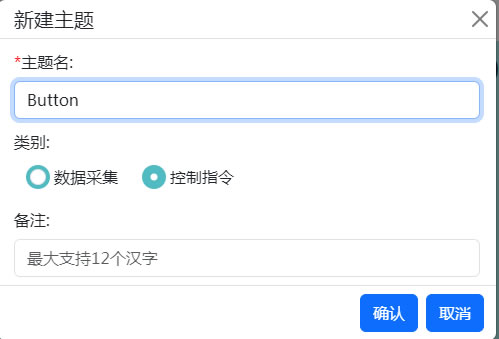
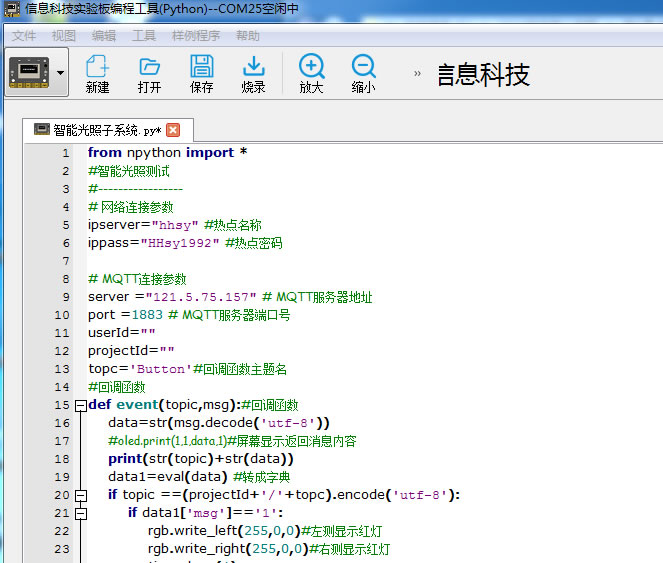
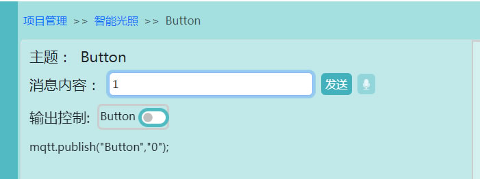
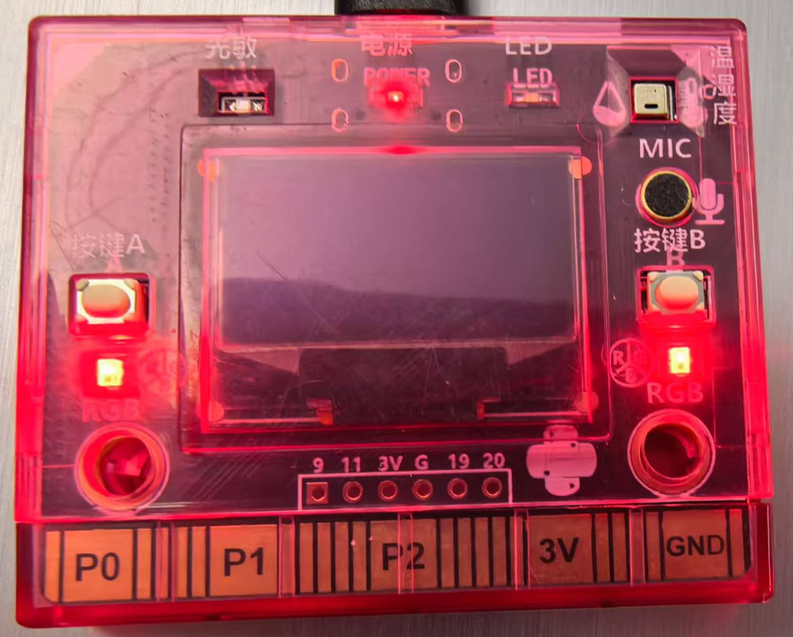
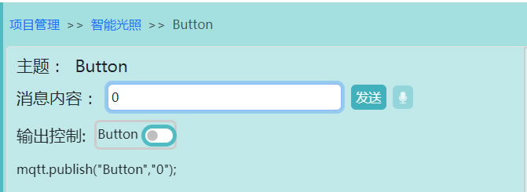

| 首页 | 校园农场智能物联系统 |
|||
|
智能光照子系统“校园农场”物联系统包括智能光照子系统，自动通风子系统，自动灌溉子系统，智能水位控制子系统。其中智能光照子系统是校园农场物联网系统中发挥着重要的作用，实验板通过物联数据中台订阅Button主题数据从而控制实验板的LED灯的开关。 步骤如下： 步骤1：新建主题名Button.,类别：控制指令  步骤3：连接信息科技实验板，打开信息科技实验板编程工具， 打开"智能光照子系统"烧录并运行  步骤:4：在物联数据中台运行项目 *注意：确保实验板顺利订阅到物联数据中台的Button 需修改程序第11行userID和第12行projectID的值（参考视频如下）
步骤5： 发送消息内容1  观察实验板的RGB灯是否打开  发送消息内容0  观察实验板的RGB灯是否关闭 |
|||